長期トレンド
JKMとJEPXシステムプライスの推移グラフ
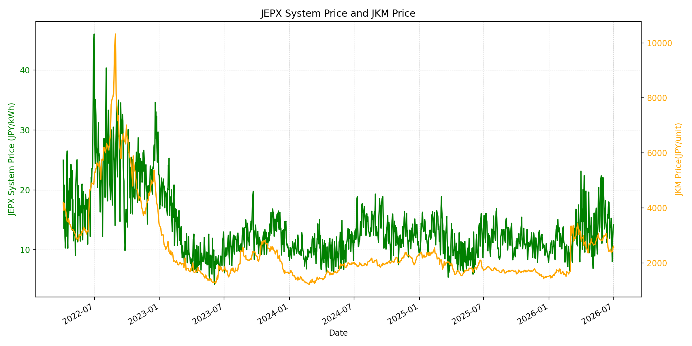
WTIの推移グラフ
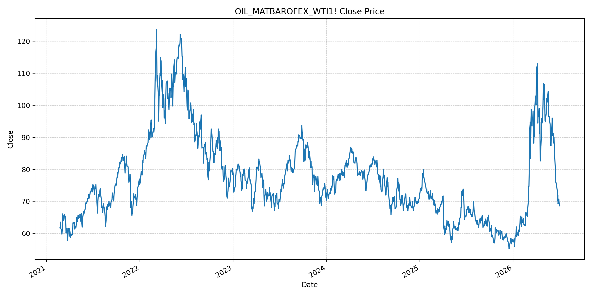
JEPXエリアプライスグラフ（直近一年分）
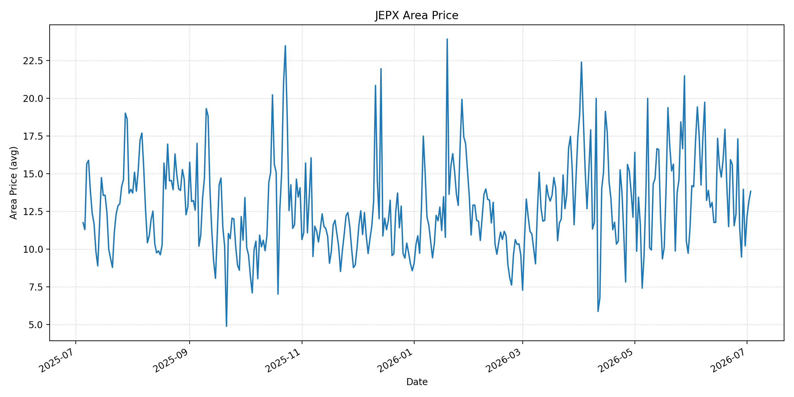
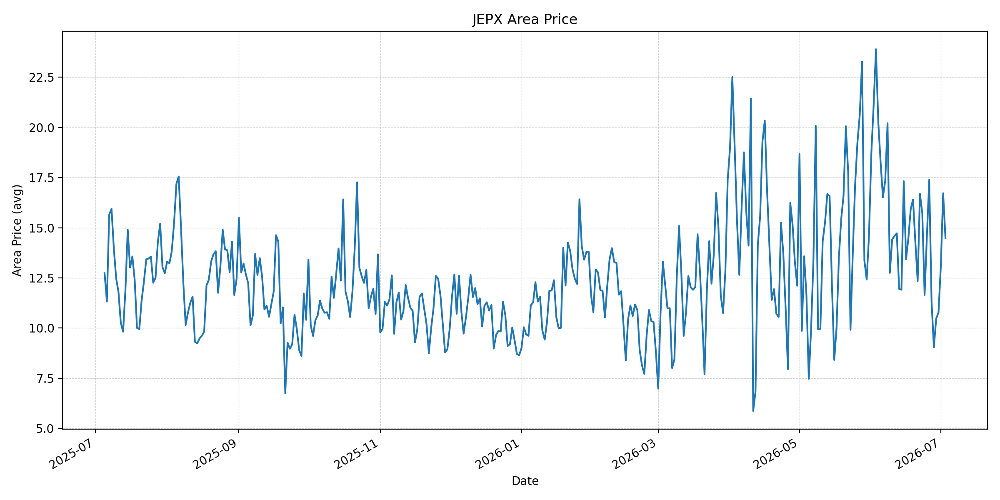
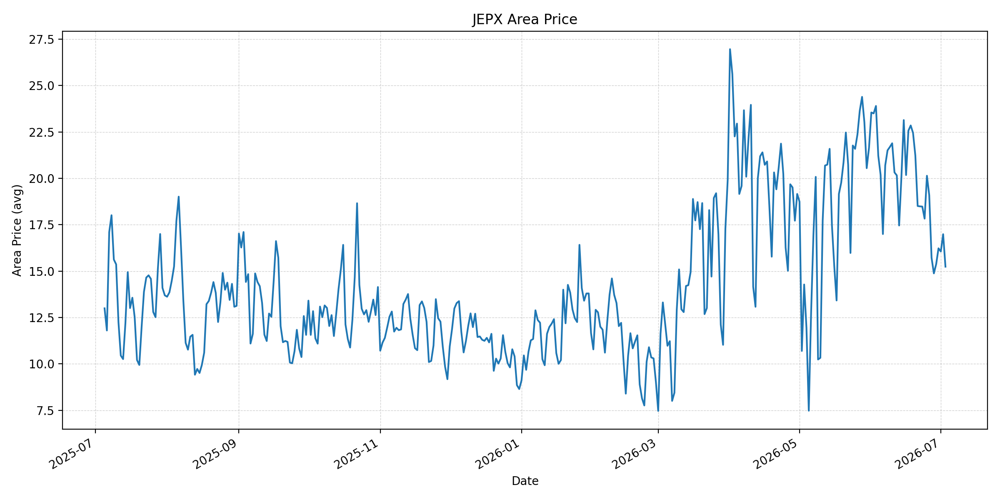
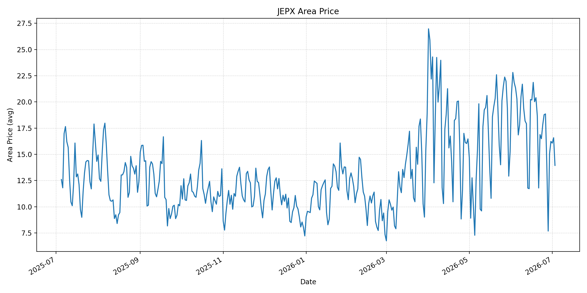
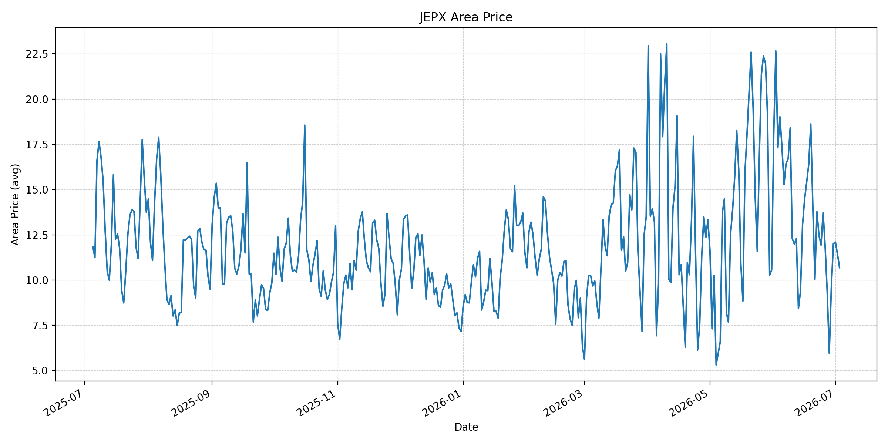
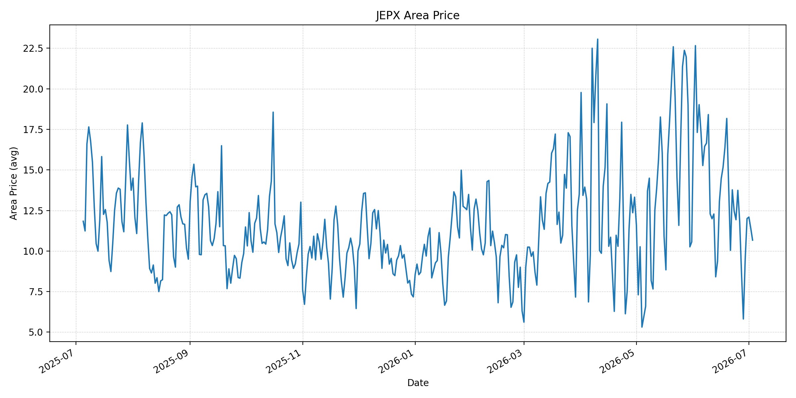
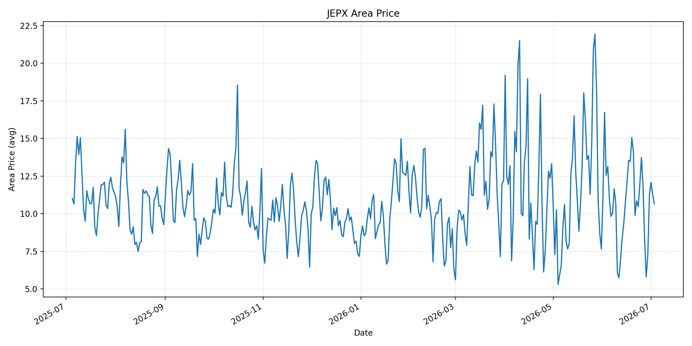
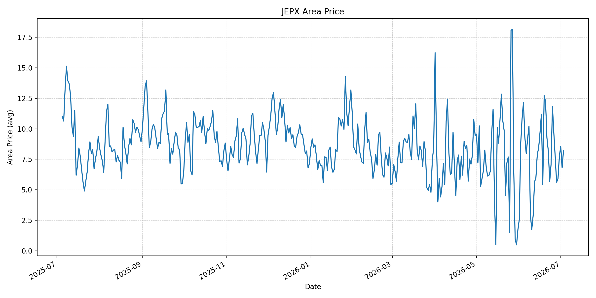
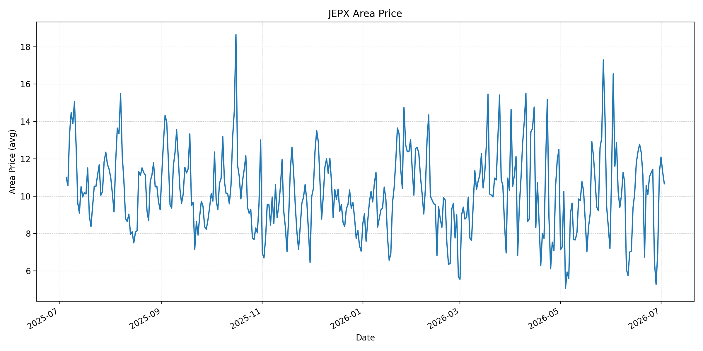
短期トレンド
JKMとJEPXシステムプライスの推移グラフ
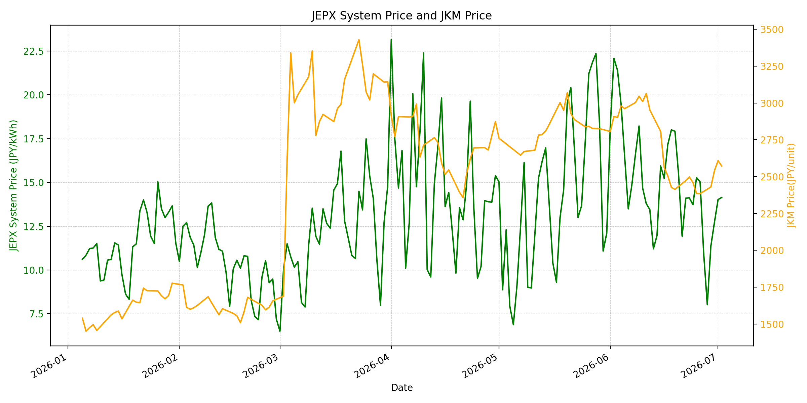
WTIの推移グラフ
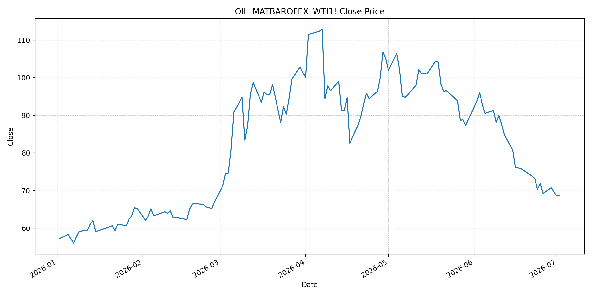
JEPXシステムプライス
JEPXは受渡日ベースの最新非空値で評価しています。最新値は 2026-07-03 分です。先週終値は 2026-06-26 時点の直近値、先月終値は 2026-06-30 時点の直近値で評価しています。
| エリア | 当日価格 | 前日価格 | 前日比（％） | 先週終値 | 先週比（％） | 先月終値 | 先月比（％） | 過去最高値 | 最高値比（％） |
|---|---|---|---|---|---|---|---|---|---|
| システム | 12.09 | 14.14 | -14.50 | 15.03 | -19.56 | 12.73 | -5.03 | 64.06 | -81.13 |
| 北海道 | 13.83 | 13.16 | 5.09 | 17.30 | -20.06 | 10.21 | 35.46 | 73.92 | -81.29 |
| 東北 | 14.49 | 16.72 | -13.34 | 17.39 | -16.68 | 10.78 | 34.42 | 84.92 | -82.94 |
| 東京 | 15.24 | 16.99 | -10.30 | 19.09 | -20.17 | 16.23 | -6.10 | 86.13 | -82.31 |
| 中部 | 13.94 | 16.58 | -15.92 | 18.85 | -26.05 | 16.23 | -14.11 | 52.06 | -73.22 |
| 北陸 | 10.68 | 11.42 | -6.48 | 11.82 | -9.64 | 12.01 | -11.07 | 46.48 | -77.02 |
| 関西 | 10.67 | 11.41 | -6.49 | 11.82 | -9.73 | 12.00 | -11.08 | 46.48 | -77.05 |
| 中国 | 10.66 | 11.29 | -5.58 | 11.82 | -9.81 | 11.26 | -5.33 | 46.48 | -77.07 |
| 四国 | 8.23 | 6.81 | 20.85 | 9.67 | -14.89 | 7.72 | 6.61 | 46.48 | -82.30 |
| 九州 | 10.66 | 11.29 | -5.58 | 11.44 | -6.82 | 11.24 | -5.16 | 40.54 | -73.71 |
LNG先物価格
最新値は 2026-07-02 の LNG(close) です。先週終値は 2026-06-25 時点の直近値、先月終値は 2026-06-30 時点の直近値で評価しています。
| 当日価格 | 前日価格 | 前日比（％） | 先週終値 | 先週比（％） | 先月終値 | 先月比（％） | 過去最高値 | 最高値比（％） |
|---|---|---|---|---|---|---|---|---|
| 2573.00 | 2609.00 | -1.38 | 2386.00 | 7.84 | 2541.00 | 1.26 | 10319.00 | -75.07 |
石油先物価格
最新値は 2026-07-02 の OIL(close) です。先週終値は 2026-06-25 時点の直近値、先月終値は 2026-06-30 時点の直近値で評価しています。
| 当日価格 | 前日価格 | 前日比（％） | 先週終値 | 先週比（％） | 先月終値 | 先月比（％） | 過去最高値 | 最高値比（％） |
|---|---|---|---|---|---|---|---|---|
| 68.69 | 68.58 | 0.16 | 71.92 | -4.49 | 69.50 | -1.17 | 123.70 | -44.47 |
ニュース
イラン情勢に関するニュース
- 2026年7月2日、APは、イラン軍統合司令部がホルムズ海峡を航行する石油タンカーに対し、イラン承認ルートを使わなければ「強力な対応」を取ると警告したと報じました。米イラン協議は継続しているものの、航路管理を巡る対立は残っています。 参照: AP, 2026-07-02
- APは同日、イラン国営テレビが「外国船が承認外ルートで座礁した」と主張した件について、対象船はイラン関連船で、3月中旬からイラン領海付近にとどまっている可能性が高いと検証しました。イラン側の海峡管理主張を補強する情報戦の要素が強い内容です。 参照: AP Fact Focus, 2026-07-02
ホルムズ海峡経由の石油・LNGに関するニュース
- APは、米イラン暫定合意により60日間は通航料なしで船舶通航を認める一方、イランが航路管理と将来の通航料を主張していると報じました。Lloyd's List Intelligenceによると、前週の通航船舶は258隻で、その前週の138隻から回復しましたが、戦前水準を下回っています。 参照: AP, 2026-07-02
- WSJは2026年7月2日、ホルムズ海峡の通航再開と米イラン協議を材料に、WTIが68.69ドル、Brentが71.80ドルで小幅高となったと報じました。協議は脆弱で、核問題やレバノン関連の合意が進まなければ再緊張の余地があるとの見方も示されています。 参照: WSJ, 2026-07-02
ホルムズ海峡経由でない石油・LNGに関するニュース
- 2026年7月2日、MarketWatchは、原油価格がイラン戦争前の水準へ戻った一方、海上輸送、保険、需給は完全に正常化していないと分析しました。OPEC+の余力、備蓄、地域パイプライン、中国需要の弱さが供給不安を和らげています。 参照: MarketWatch, 2026-07-02
- WSJは、米国の石油リグ数が今週5基増えて445基となり、2025年5月末以来の高水準になったと報じました。中東フロー回復に加え、非ホルムズ供給の増勢が価格上昇を抑える一方、在庫再積み増し需要は下支え要因です。 参照: WSJ, 2026-07-02
日本国内のイラン戦争に関係するニュース
- 過去24時間で、JEPX制度、国内電力需給ルール、または日本政府の対イラン戦争関連対策を直接変更する主要な新規公表は確認できませんでした。
- 関連する国内材料として、経済産業省は2026年5月20日、2026年度夏季は全エリアで安定供給に最低限必要な予備率3％を確保できるため節電要請を実施しないと発表しています。一方で、国際情勢の変化、異常気象、火力発電所の集中はリスクとして明記されています。 参照: 経済産業省, 2026-05-20
インサイト
ニュース事項による日本の電力市場への影響（短期：数日〜1週間）
- JEPXシステムプライスは 12.09 円/kWhで前日比 -14.50%、先週比 -19.56% です。東京も 15.24 円/kWhで前日比 -10.30% と下がり、原油が戦前水準近辺に戻ったことは短期の燃料費心理を抑える材料です。
- OILは 68.69 で前日比 0.16% と横ばい、先週比は -4.49% です。ホルムズ通航は回復していますが、APが報じた航路管理警告により、船舶保険・航路選択のリスクプレミアムは完全には消えていません。
- LNGは 2573.00 で前日比 -1.38% と反落しましたが、先週比は 7.84% です。北海道は 13.83 円/kWhで前日比 5.09%、四国は 8.23 円/kWhで 20.85% 上昇しており、燃料安だけでは地域需給のばらつきを消せません。
ニュース事項による日本の電力市場への影響（長期：1ヶ月〜半年）
- ホルムズ通航の回復、OPEC+余力、米国リグ増加、中国需要の弱さが続けば、OILは過去最高値比 -44.47%、LNGは -75.07% と低位にあり、日本の火力燃料コストは上振れしにくくなります。
- ただし、イランが航路管理と将来の通航料を再主張している点は1ヶ月〜半年の調達リスクです。60日間の暫定合意後に制度化や報復措置が再燃すれば、LNG船・原油タンカーの保険料と迂回コストが再びJEPXの上方要因になります。
- 国内では節電要請なしの前提が維持されていますが、北海道は先月比 35.46%、東北は 34.42% と高く、地域別の夏季需要と火力制約が残ります。燃料相場の落ち着きは長期の下押し材料ですが、需給ひっ迫日にはエリア価格が先行して反応する可能性があります。